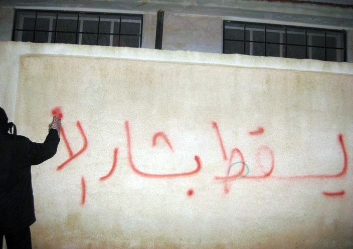
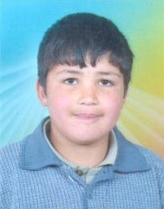
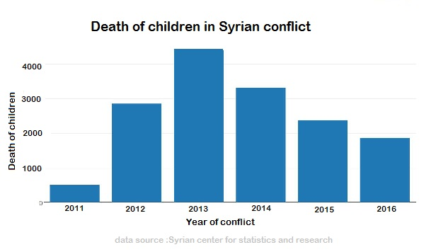
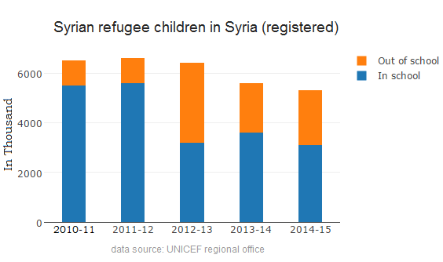
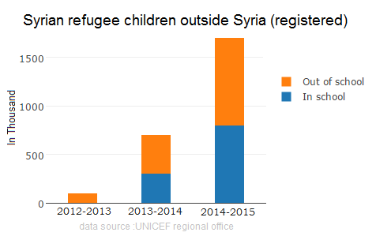
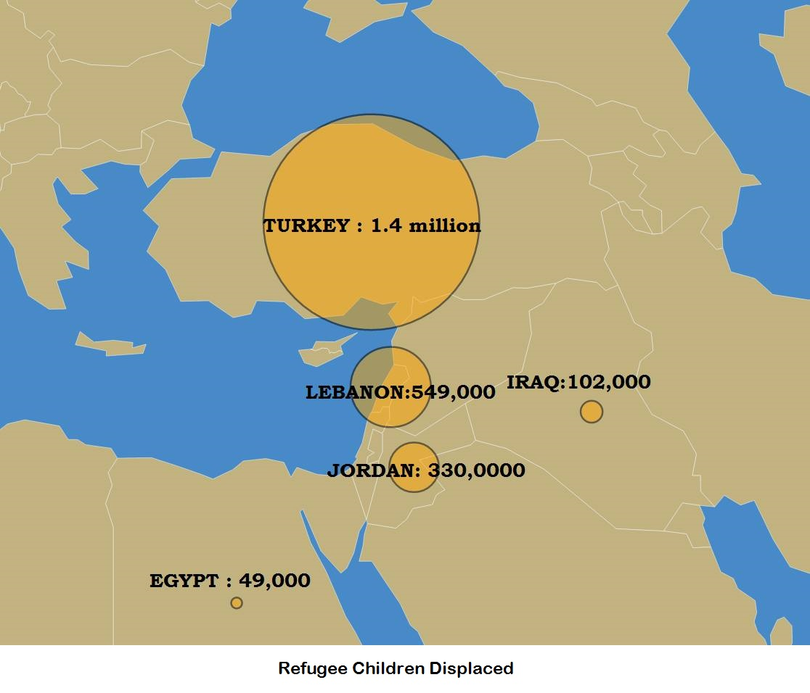
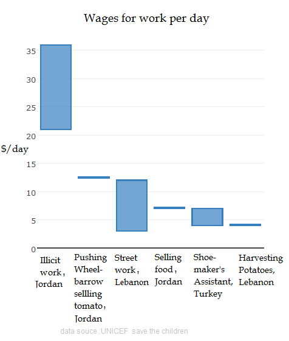

It was mid March of 2011. The ideas of Arab spring were still to permeate Syria, though, the news of Arabs fighting for their freedom and toppling oppressive regimes was all over social media. A group of kids from the city of Darra took it upon themselves to start the freedom movement by graffiting 'The People want the fall of the Regime' on their school wall. With Hosni Murbarak toppled a month earlier by Egyptian Protestors, Basher Al-Assad - the Syrian President, was taking no such chances. Any signs of uprising where cracked down with brute force. The children were jailed and tortured, launching a series of Anti-Assad protests in Darra, Damascus and Aleppo. The government's reprisal was to disrupt and shoot at protest groups. This incident marked the start of the Syrian Revolution.

Hamza Ali-Khateeb was a 13 year old boy who joined his parents in a political rally to protest the siege on Darra by Assad forces. The rally was fired upon by the forces and amid the chaos, Hamza separated from his family. He was arrested by AirForce Intelligence, a government wing infamous for using harsh tactics to suppress political dissent. Hamza was brutally tortured and killed in prison. Hamza's body was returned to his parents, a full month after this arrest.

A year into the conflict, warchild.org documented human rights abuses suffered by children in Syria. Conflicts affect children the most, but in Syria there were reports by United Nations(UN) and Human Rights Commission(HRC) of children being targeted deliberately. In a village called Houla, the Syrian Army went on a rampage, after being attacked by rebels at a checkpoint, executing people in their homes. 108 people were confirmed dead, out of which 49 were children.
There were also widespread reports of children being tortured. Kids were dragged out of school and used as human shields.
Free Syrian Army, a rebel group vowed not to use boys aged less than 17 in the conflict. But, children as young as 14 were trained for combat and deployed in support roles in the war.


On 21 August 2013, a banned chemical agent Sarin was propelled with rockets into densely populated rebel held territories. The war crime took life of 1400 people, of which 400 were children.
Oxford Research Group estimates 11,420 children had been killed since the start of the conflict.
UNHCR reports more than 1 million refugees are under the age of 18 with 740,000 children under the age of 11. Conflict, displacement, poverty and lack of education could result in lost generation.
Very few children had access to humanitarian assistance. In the refugee camps, traumatised children have very little access to medical help or education. According to WarChild.org only 20% of the children received counselling and about 118,000 children were able to continue their education. Parents were afraid for the children to leave camps due to the fear of sexual violence.

Data source: Syria Regional Refugee Response
ISIS took over large swaths of Syria and recruited children by offering free schooling, clothing and meals. Kids at ISIS schools were indoctrinated and radicalised , trained in combat, taught execution of enemies and then sent to the battle field. Kids were also being trained for suicide bombing missions.
ISIS abducted 153 Kurdish boys who were returning home after finishing their school exams. The kids underwent ISIS indoctrination in Jihad and Sharia. 70 children were released later in the year.
Yazidi women and girls who were abducted in Sinjar by ISIS were sold as sex slaves or forced into marriages with soldiers.
The rise of ISIS exacerbated the Refugee Crisis, with more and more people fleeing their brutal rule. According to UNICEF reports more than half of the refugees are children below the age of 17.

Unicef reports of 14 million children suffering from the conflict. Before the start of the war Syria had almost 100% school enrolment rates. The conflict 4 and half years later had driven 80% of the Syrians into deep poverty and a very tiny percentage of children had access to schooling. This has forced most children to take up work and contribute to the family income.
The risks don't stop at kids missing out on education. Due to harsh financial circumstances children have to work long hours for very low pay. The work children do is very manual, which takes heavy toll on the bodies. They also work under dangerous conditions often accompanied with physically and mentally abusive environments.
The dangers of leaving the refugee camps are enormous too. Refugees risk being at the mercy of smugglers, police and the sea as they try to make an effort to reach better lands. Aylan Kurdi and his family tried to head to Greece from Turkey in the same hope; risking everything. But, the small and overcrowded boat they were on capsized. Three year old Aylan Kurdi drowned and the sea carried his lifeless body to the shore, the image becoming a reminder of the dangers faced by Syrian Children every day.